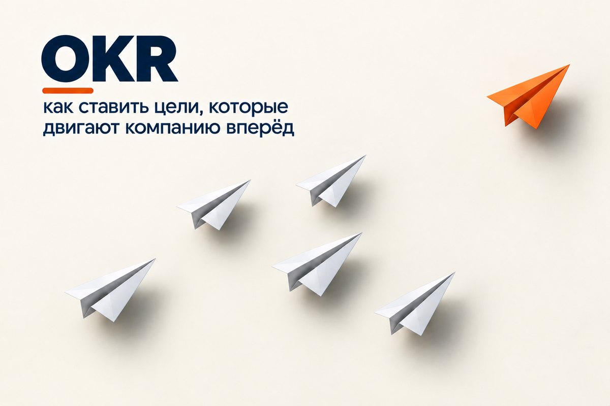
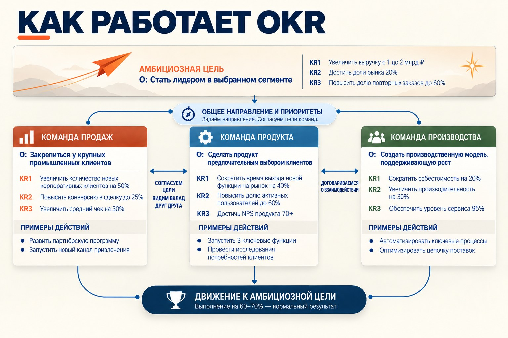

OKR: как ставить цели, которые двигают компанию вперёд
Мы продолжаем серию о системах управления компанией и разбираем пару подходов к работе со стратегией и целями. Первым был Balanced Scorecard Каплана и Нортона. Второй подход — OKR (Objectives and Key Results), цели и ключевые результаты.
OKR появились в Intel в 1970-е. Для этой компании движение вперёд было условием выживания. Темп отрасли задавал закон Мура, названный по имени одного из основателей Intel: число транзисторов на микросхеме удваивалось примерно каждые два года. Продукт, который сегодня лидировал, через пару лет устаревал, и тот, кто просто держал достигнутый уровень, проигрывал.
Энди Гроув, один из руководителей Intel, искал способ не отставать от этого темпа. За основу он взял управление по целям, которое в 1950-е описал Питер Друкер. Идея была верной, но на практике подход стал формальностью: цели ставили раз в год и привязывали к премии, поэтому люди брали только то, что точно выполнят. Для Intel этого было мало.
Гроув сохранил идею Друкера, но изменил устройство так, чтобы цели тянули организацию вперёд. В 1999 году Джон Дорр, начинавший в Intel, принёс эту систему в Google, а его книга «Измеряйте самое важное» (2018) сделала OKR широко известными. Разберём, что именно поменял Гроув и почему это работает.

Механика целей
Первое изменение Гроува — механика целей: как их формулируют, сколько их и в каком ритме с ними работают.
Цель и ключевые результаты
Классическое управление по целям задавало направление, но не говорило, как проверить, что цель достигнута. В OKR к каждой цели добавили ключевые результаты.
Цель отвечает на вопрос, куда мы хотим прийти. Её формулируют словами, обычно без цифр, так, чтобы она была понятна каждому, кто над ней работает. Ключевые результаты отвечают на вопрос, как понять, что мы пришли. Это два-четыре измеримых результата, по которым в конце срока можно однозначно сказать, насколько цель достигнута.
Условный пример. Цель: «Клиенты возвращаются к нам после первого заказа». Ключевые результаты на квартал: доля повторных заказов выросла с 30 до 45%, срок ответа на рекламацию сократился с пяти дней до одного, ушло не больше двух крупных клиентов. «Обучить менеджеров» или «запустить CRM» ключевыми результатами не считаются. Это действия, а ключевой результат описывает, что изменилось в итоге.
Фокус
Целей немного, обычно три-пять у компании или команды. Каждая цель, взятая в работу, забирает людей и время у чего-то другого, поэтому короткий список — это решение о том, что сейчас важнее всего. Длинный список означает, что такого решения не приняли.
По той же причине в OKR попадает не вся работа. Текущая деятельность держится на постоянных показателях: выручке, марже, сроках, качестве. OKR их обычно не дублируют, туда записывают то, что должно измениться: новый продукт, выход в новый сегмент, перестройку процесса.
Квартальный цикл
OKR ставят на квартал внутри годового плана. Прогресс проверяют регулярно, как правило раз в неделю, чтобы отставание было видно, пока его ещё можно исправить. Если условия изменились, ключевые результаты пересматривают или снимают, не дожидаясь конца цикла. По его итогам результаты оценивают, разбирают, что помешало, и ставят OKR на следующий квартал.
Высокая планка
Второе изменение — высокая планка. Цель, которую команда и так выполнит, ничего не меняет. Цель, до которой привычными способами не дотянуться, заставляет искать другие подходы: пересматривать процесс, отказываться от второстепенного, договариваться с соседними подразделениями.
Отсюда простая проверка. Если ключевой результат достижим без изменений в работе, он описывает текущую деятельность, просто в новой форме.
Обязательные и амбициозные OKR
При этом не каждая цель должна быть амбициозной. OKR делят на два вида.
Обязательные — то, что компания должна сделать в полном объёме: запустить линию к оговорённой дате, перевести ключевых клиентов на новые условия к концу квартала. Ради них перестраивают другие приоритеты, а срыв разбирают как ошибку планирования или исполнения.
Амбициозные — цели, путь к которым пока неясен. Для них хорошим результатом считается 60–70%. Если такие цели раз за разом закрываются на 100%, планка поставлена слишком низко.
Эти два вида важно не путать. Если обязательную цель записать как амбициозную, неполное выполнение станет нормой, и то, что нужно было сделать к сроку, сделают наполовину. Если амбициозную выдать за обязательную, команда начнёт защищаться и занизит её до гарантированного уровня.
Сколько амбиций нужно компании
Соотношение двух видов зависит от положения компании. Когда касса мелеет, большая часть OKR обязательная: сначала нужно закрыть то, от чего зависит выживание. Когда запас прочности есть, можно позволить себе больше амбициозных целей и больший риск не дойти до конца.
Открытость
Третье изменение — открытость. В классическом управлении по целям договорённость оставалась делом руководителя и подчинённого и дальше их разговора не выходила. В OKR цели компании, руководителей и команд открыты всем, включая цели первого лица.
Каждый видит, куда движется компания
Когда цели компании известны всем, сотрудник понимает, как его работа связана с общим направлением, и сам сверяет с ним свои приоритеты. Открытые OKR помогают держать фокус. Если посреди квартала приходит просьба взяться за что-то постороннее, у команды есть понятный всем довод отказаться или обсудить, что ради этого отложить.
Открыт и ход работы. Отставание заметно задолго до конца квартала, и о нём говорят вслух, а не прячут до отчёта. Коллеги знают, где нужна помощь, а руководитель вовремя перебрасывает ресурсы.
Часть целей ставят снизу
Сначала определяются цели компании. Затем подразделения формулируют свои OKR и согласовывают их с руководителями. Это не механический каскад, когда ключевые результаты начальника переписывают в цели подчинённых: команда сама показывает, чем она сдвинет общую цель, и часть целей предлагает от себя. Те, кто ближе к клиенту и к процессу, часто раньше других замечают, что нужно менять. Свою цель команда воспринимает серьёзнее, чем навязанную.
Подразделения договариваются напрямую
Самые трудные цели редко решаются силами одного подразделения. Когда OKR открыты, соседние команды знают, кто над чем работает, находят зависимости и дублирование и договариваются напрямую, не поднимая каждый вопрос наверх. Если цель общая, каждая участвующая команда записывает свою часть в собственные OKR.

Открытость даётся нелегко: любой промах на виду у всех. Люди идут на это, только если уверены, что за него не накажут.
Отделение от премии
Четвёртое изменение — цели отделены от оплаты. Без этого не работают ни высокая планка, ни открытость.
Почему премия и амбиции несовместимы
Если премия зависит от процента выполнения, амбициозная цель становится личным риском. Тот, кто поставил цель на пределе возможного и дошёл до 70%, получит меньше того, кто взял цель попроще и закрыл её полностью. После одного-двух таких кварталов цели начинают занижать, и OKR превращаются в KPI с новым названием: прежние показатели, прежние торги за план, прежняя осторожность.
Как развести OKR и оплату
Полностью их не разрывают. Результаты по OKR учитывают, когда обсуждают работу человека, но премию по ним не рассчитывают. На мой взгляд, самый понятный способ — развести их по содержанию: премия остаётся за операционной деятельностью, у которой есть постоянные показатели, а в OKR попадают задачи развития, и на премию они не влияют.
Зато OKR сильно влияют на продвижение. Всё на виду, и когда человек добивается впечатляющего результата, это замечают все. Сколько процентов от плана он при этом составил, уже неважно.
Сказать об этом нужно до первого цикла. Когда я внедрял OKR, с этого и начал: объяснил людям, что OKR не будут использоваться для премирования.
Доверие
Правило о премии — только половина дела. Люди поверят ему, когда увидят, как руководство разбирает первый невыполненный OKR: ищет, что помешало и чему научились, или ищет виноватого. Если за промах наказали хотя бы раз, в следующем квартале цели станут безопасными, а об отставании перестанут говорить вслух. Начинается это с руководителя компании: его OKR открыты так же, как у всех, а по тому, как он обсуждает невыполненные цели, люди понимают, чего ждать на самом деле.
Когда доверие есть, меняется сама оценка результата. Команда, дошедшая до 60% цели, которую недавно считала недостижимой, часто оказывается дальше, чем была бы с осторожным планом, выполненным полностью. Ради этого движения OKR и нужны.
Как изменения работают вместе
Четыре изменения держатся друг за друга: если убрать одно звено, остальные перестают работать. Без ключевых результатов амбициозная цель остаётся лозунгом. Без высокой планки OKR описывают текущую работу. Без открытости каждая команда движется в своём направлении. Без отделения от премии цели становятся осторожными, и компания возвращается к тому управлению по целям, от которого Гроув уходил.
Поэтому форма у OKR простая, а внедрить их трудно. Записать цели и ключевые результаты можно за день. Чтобы люди поверили, что за недостигнутую амбициозную цель не накажут, нужно несколько кварталов последовательного поведения руководства.
Что закрывают OKR
OKR — не полная система управления компанией. Выработку стратегии, процессы, структуру и текущую деятельность они не охватывают, для этого нужны другие инструменты. Но как способ двигать компанию вперёд OKR работают отлично.
Стратегическое планирование
OKR связывают стратегию с тем, что меняется в компании каждый квартал. Стратегия задаёт направление, OKR выбирают из него ближайший шаг. Решения о приоритетах перестают приниматься от случая к случаю: перед каждым циклом компания явно договаривается, что двигает сейчас, а что откладывает.
Управление эффективностью
Регулярные проверки и разбор итогов каждого цикла превращают OKR в постоянный контур управления: компания видит, где движется, а где застряла, и поправляет курс, не дожидаясь конца года.
Развитие руководителей
В системе OKR роль контролёра отходит на второй план. Главной становится другая работа: регулярные разговоры с людьми о целях и прогрессе, о том, что мешает, какая нужна помощь и чему научились. Руководитель становится наставником. Обратная связь идёт постоянно, а не раз в год на аттестации, и люди растут на задачах, которые ещё недавно считали себе не по силам.
Развитие культуры
С культурой связь двусторонняя. OKR приживаются только там, где можно открыто говорить об отставании и не бояться взять трудную цель, и иногда культуру приходится менять до внедрения. Но и сами OKR, если применять их квартал за кварталом, меняют привычки: люди раньше говорят о проблемах, договариваются напрямую, берутся за цели выше обычного. Постепенно это становится нормой, и OKR превращаются из процедуры в способ работы.
OKR и Balanced Scorecard
BSC и OKR переводят стратегию в цели и измеримые результаты, но решают разные задачи.
BSC описывает стратегию целиком: как цели в финансах, работе с клиентами, процессах и развитии компании связаны между собой и за счёт чего одно должно привести к другому. Строит эту модель руководство. OKR выбирают из стратегии немногое, что нужно сдвинуть сейчас, и удерживают на этом внимание всей компании.
Разные показатели
Показатели BSC живут годами. По ним видно, работает ли стратегия и в каком состоянии бизнес, так что им нужна стабильность, иначе не с чем сравнивать. OKR меняются от квартала к кварталу: когда сдвиг произошёл, на его место приходит следующий. В BSC невыполненное целевое значение означает разрыв, который нужно закрыть. В амбициозных OKR выполнение на 70% считают нормальным результатом.
Как их сочетать
Подходы не исключают друг друга. Стратегическая карта и инициативы BSC — естественный источник для OKR. В начале цикла компания выбирает из них то, что продвигать сейчас, и формулирует для этого цели и ключевые результаты. По показателям BSC при этом видно, ведёт ли движение туда, куда задумано стратегией.
Что выбрать
BSC требует больше работы: договориться о стратегии, построить карту, связать её с показателями и бюджетом. Зато она даёт целостную картину, которой у OKR нет. Со временем BSC нередко усложняется: добавляются новые цели и показатели. Показательно, что Пол Нивен, много лет писавший о BSC, позже занялся OKR: ему нужен был инструмент попроще, с которым команды могут работать сами.
OKR быстрее запустить, но стратегию они не заменяют. Если компания не договорилась, куда движется, OKR превращаются в набор несвязанных целей, каждая из которых разумна сама по себе.
Если коротко, BSC помогает понять, как устроена стратегия, и следить, приносит ли она результат. OKR помогают шаг за шагом по ней двигаться. Выбор зависит от того, чего компании сейчас не хватает: понимания стратегии или движения по ней.
Что почитать подробнее
- Эндрю Гроув — «Высокоэффективный менеджмент».
- Джон Дорр — «Измеряйте самое важное. Как Google, Intel и другие компании добиваются роста с помощью OKR».
- Пол Нивен, Бен Ламорт — «Цели и ключевые результаты. Полное руководство по внедрению OKR».